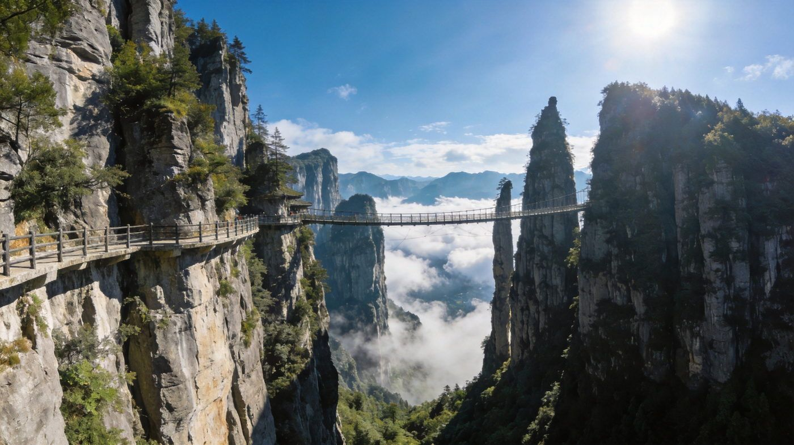
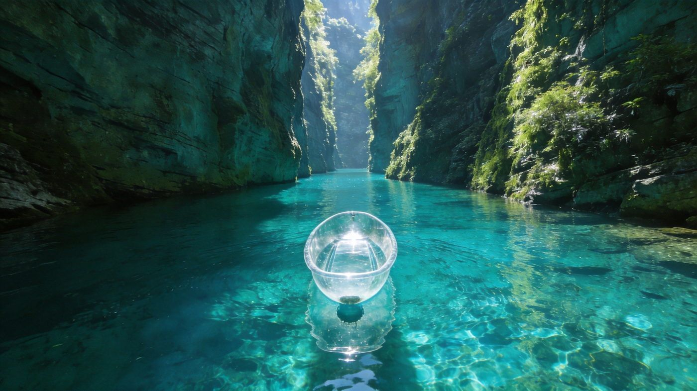
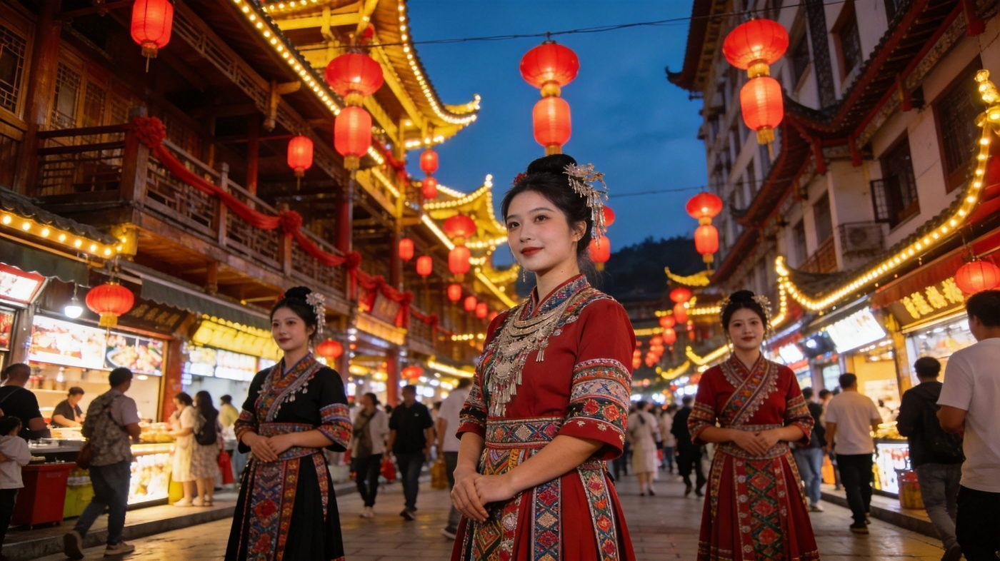
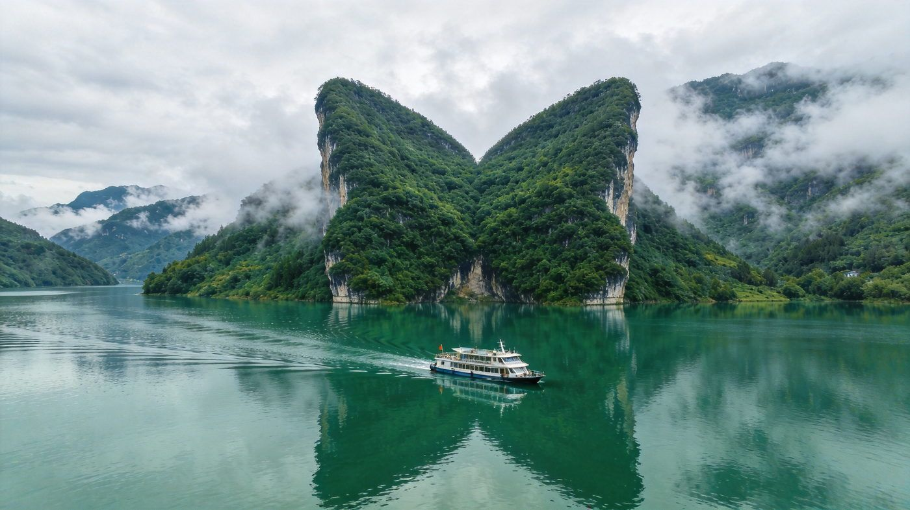
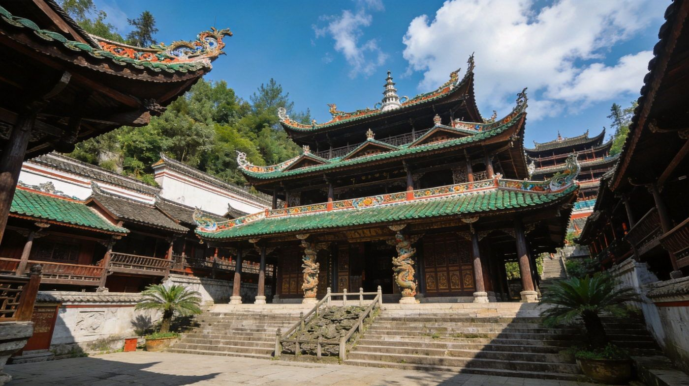

5A景区
恩施大峡谷 · 喀斯特地貌博物馆
恩施旅游的「半壁江山」：云龙地缝幽深清冽，七星寨的「一炷香」石柱直插云霄、绝壁栈道悬挂在峭壁之上，堪称「喀斯特地貌天然博物馆」，观感极为震撼。
👍 必去理由：恩施必打卡榜首。门票约 205 元（含景交），索道/电梯另计；全程徒步 5–6 小时，建议早出发、索道上山省力。拍照一炷香下午 2–3 点光最佳。
配图：原创生成 · 无版权风险
湖北恩施，世界硒都 + 喀斯特地貌天然博物馆。有震撼的大峡谷绝壁栈道、被誉为「中国仙本那」的屏山峡谷悬浮船、土家族女儿城与土司文化，还有清江画廊的碧水。求稳走 4 天经典版，想玩透走 5 天深度版。1–3 人出行均适用，含行程 / 住宿 / 美食 / 预算 / 交通方式对比。
核心策略：D1 女儿城+土司城，D2 恩施大峡谷，D3 屏山（仙本那），D4 返程或收尾。不贪多、体力均衡。
在经典版基础上加清江画廊游船、宣恩贡水夜景，用一天在腾龙洞或梭布垭石林二选一收尾，节奏更松弛。
把恩施最有辨识度的 5 个点单独拎出来看图说清楚——值不值得去、怎么玩、藏在哪。

恩施旅游的「半壁江山」：云龙地缝幽深清冽，七星寨的「一炷香」石柱直插云霄、绝壁栈道悬挂在峭壁之上，堪称「喀斯特地貌天然博物馆」，观感极为震撼。
👍 必去理由：恩施必打卡榜首。门票约 205 元（含景交），索道/电梯另计；全程徒步 5–6 小时，建议早出发、索道上山省力。拍照一炷香下午 2–3 点光最佳。
配图：原创生成 · 无版权风险

藏在大山深处的峡谷秘境，水质清透呈翡翠果冻蓝，透明小船仿佛悬空漂浮在水面之上，两侧垂立青色绝壁，被网友称为「中国的仙本那」，是近年最火的网红打卡点。
👍 必去理由：必打卡。门票+船票约 210 元，悬浮船拍照约 30–80 元/人；务必晴天去才有果冻水效果，旺季提前订票（约 7 天），早 7:30 入园避开人流。
配图：原创生成 · 无版权风险

免费开放的土家族民俗文化街区，吊脚楼、雕花门窗、大红灯笼，入夜灯火通明、热闹非凡。可看《赶场相亲》实景剧、篝火摆手舞，感受浓厚土家风情。
👍 必去理由：免门票、氛围好，是感受土家文化最适合的地方。建议傍晚来，看实景剧（约 20:00）+ 逛夜市；街内小吃偏贵，正餐可回市区本地馆子吃。
配图：原创生成 · 无版权风险

乘游船穿行于清江之上，两岸青山对峙、碧水如玉，最出名的「蝴蝶崖」形似振翅蝴蝶倒映水中。全程约 4.5 小时，看千瀑峡、蝴蝶崖，轻松不累。
👍 必去理由：慢节奏放松首选。游船约 150–200 元/人；配合狮子关水上浮桥安排同一天，上午浮桥、下午游船，节奏刚好。
配图：原创生成 · 无版权风险

展示土家族土司文化的景区，核心「九进堂」依山而建、飞檐斗拱、雕梁画栋，是民族传统建筑的集中体现，游客不多时能感受到一份古朴与庄严。
👍 必去理由：门票约 45 元，看九进堂吊脚楼建筑 + 免费民俗歌舞，两小时足够；和女儿城可安排同一天（土司城白天、女儿城晚上）。
配图：原创生成 · 无版权风险
恩施景点分散、山路多，怎么走对体验影响最大。下面把三种方式讲透。
| 维度 | 🚗 自驾 | 🚙 包车 | 🚌 跟团 |
|---|---|---|---|
| 核心体验 | 时间自由、想停就停，不受景区直通车班次限制，行程最灵活 | 坐车看风景、司机熟路，同样自由，可点对点安排，免去自己开山路 | 线路固定、省心省力，导游讲解，但节奏偏赶 |
| 适合 有山路驾驶经验、享受开车的游客 | 适合 不想开山路、想保留自由度的 2–3 人团 | 适合 带长辈小孩、图省心、时间紧的游客 | |
| ✔ 自由度最高、不用等班车 | ✔ 免去山路驾驶压力、可拼车分摊 | ✔ 全程安排、讲解、不操心 | |
| 费用与成本 | 租车+油费+过路，2–3 人分摊人均更低 | 按天计费（约 400–600 元/天 含司机），人数少时人均偏高 | 人均约 1200–1800 元起，包住宿门票省心 |
| 4 天租车+油费约 1200–1800 元/车 | 包车 4 天约 1600–2400 元/车 | 跟团报价浮动大，注意隐形加点 | |
| ✔ 3 人拼车人均最省 | ✘ 人少时人均过高 | ✘ 可能有购物/自费项目、节奏赶 | |
| 注意事项 | 恩施山路弯多坡陡，新手谨慎；大峡谷、屏山需到游客中心换乘 | 选正规平台/司机，确认车型与是否含油费过路；司机大多不进景区 | 问清是否含观光车/索道/船票、有无购物点 |
| 屏山距市区 2.5–3 小时，体力消耗大，路况一般 | 包车按天算，跨天/长途加价，提前议好 | 跟团上车点固定，可能早出晚归 | |
| ✘ 需山路驾驶经验、易累 | ✔ 折中推荐：2–3 人包车最平衡 | ✘ 深度体验略打折 | |
| 💡 一句话建议：有山路驾驶经验且 2–3 人 → 自驾；不想开山路想自由 → 包车（2–3 人拼车最划算）；带老人小孩图省心 → 跟团。 | |||
三档价位，均为 2 人房计，多人出行请按需调整。
恩施菜以土家风味为主，口味偏辣、食材富硒，按份点即可。
含 1–3 人出行说明；区间为保守–宽松，实际以淡旺季与选择为准。
| 项目 | 4天经典版 | 5天深度版 |
|---|---|---|
| 大交通（往返） | 约 300–600 | 约 300–600 |
| 住宿 | 3 晚 200–400 | 4 晚 300–550 |
| 餐饮 | 约 450–700 | 约 550–800 |
| 景点门票（大峡谷+屏山+土司城） | 约 400–550 | 约 550–800 |
| 交通/租车/包车（人均分摊） | 约 300–500 | 约 450–700 |
| 索道/电梯/悬浮船等可选 | 约 150–300 | 约 250–450 |
| 合计 · 人均 | 约 1800–2600 | 约 2500–3500 |